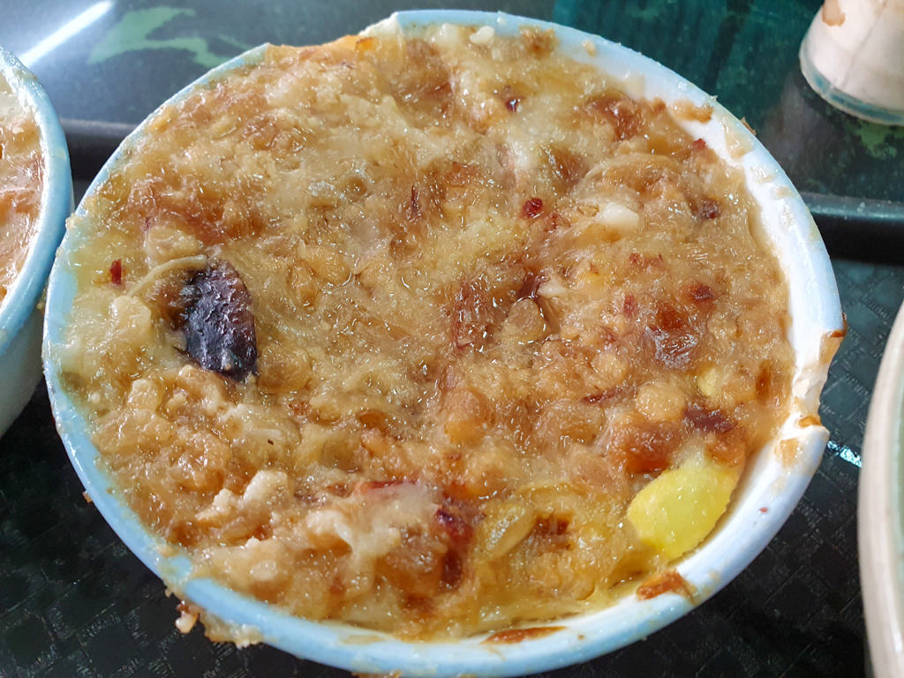
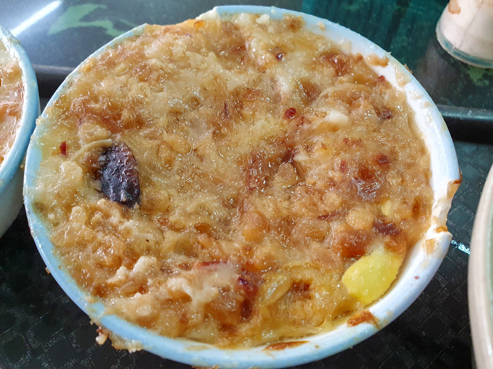

| 台南碗粿 |
在地經營40多年的阿蘭碗粿，碗粿裡面混雜著油蔥、滷蛋、香菇、肉塊、蝦米等多種配料，柔軟綿密的口感，配上特製醬料後，讓整體更多層次，老一輩的都用台語叫碗粿蘭，聽起來特別親切，下國道一號麻豆交流道馬上就到了，是出遊肚子餓的好朋友，外帶回家放冰箱，只要用電鍋蒸一下，跟現場一樣好吃。
 
| 店家名稱：阿蘭碗粿
地址：台南市麻豆區中山路179-8號 電話：06-5724035 營業時間：06:30~18:00 必吃招牌:碗粿、魚羹湯 |
富盛號創立於民國36三店傳承台南台灣米食文化，使用高品種台灣再來米 溫體豬後腿肉，天然火燒蝦仁，自製老滷肉臊再與獨家醬汁搭配淋上蒜泥，自然健康的台灣米食料理。魚羹湯則是以大骨鮮菜等食材熬製而成的湯底再將旗魚肉漿製成一顆顆大小適中的魚丸煮熟後勾芡，搭配香菜,黑醋,胡椒調味自然鮮甜的湯頭與新鮮魚羹非常爽口。
| 店家名稱：富盛號碗粿
地址：台南市中西區西門路二段333巷8號 電話：06-2274101 營業時間：7:00~17:30 (週四公休) 必吃招牌:碗粿、魚羹 |
地點就位於永樂市場側邊國華街上，是在地人極力推薦的碗粿店！許多內行人來到國華街，都會指名吃一味品碗粿，傳承自老一代的好手藝，讓碗粿保有台南傳統老味道。一味品碗粿賣的商品很單純，只賣碗粿及魚羹２樣，專注於２樣料理上，讓人感受到對於食材的用心及堅持。台南專屬的深咖啡色調碗粿，在碗粿內放入火燒蝦、豬肉塊、肉末等，我們喜歡再淋上蒜末及少許辣椒醬，繽紛的色澤光看就充滿了期待感。吃法就是繞著碗粿畫１圈再十字對剖，然後豪氣的將碗粿整塊送入嘴巴，那Q彈的口感及碗粿的香氣，再融入餡料真的太好吃了！


| 店家名稱：一味品碗粿
地址：台南市中西區國華街三段177號 電話：06-2288563 營業時間：05:00 ~ 17:00(周二公休) 必吃招牌:碗粿、魚羹 |
| ☝️top |